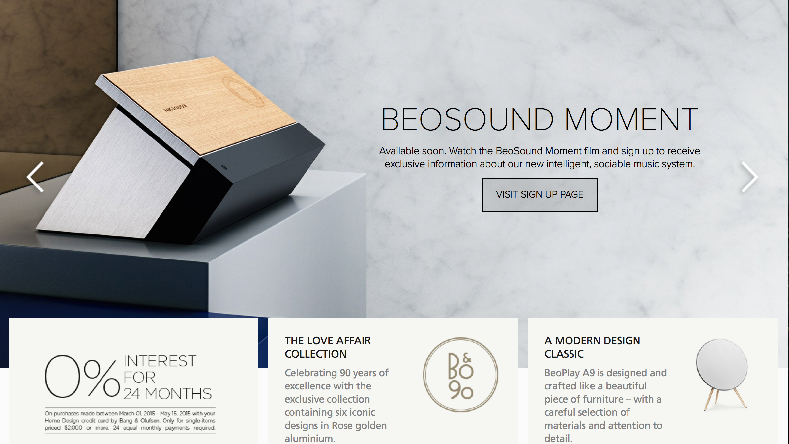
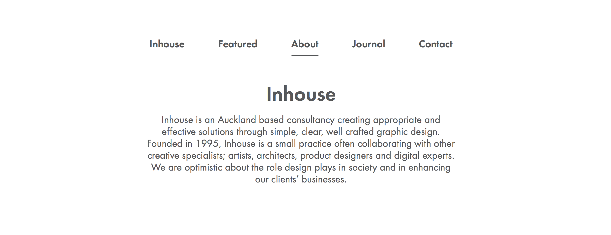

Bang & Oulfsen
Bang & Oulfsen make high end audio systems. Everything from bluetooth speakers to car audio they have a product. I found their main "banner" quite interesting, lately I have seen a lot of websites use a big slider at the center of the page this way but this is the first time I have seen fixed elements that overlay a slider like this. This Serves a great purpose for the client to show users product specials or new items as a user this is a great way to start a search for whatever they may be searching for.
Carefully Considered
Carefully Considered is a design website that has a lot of different versions of certain designs this was a really interesting site overall but the web aspect that stuck out most to me was the toolbar at the top of the page. I really like how it looks and fits in the page. It is out of the way so a user can still see designs but access the tools. For a Client this gives the user a clear and wide view of whatever design may be being viewed. As a user this allows you to navigate without the tools being in the way.
Cirq
Cirq is a website all about wine. I am more of a microbrew fan myself but I really enjoy how this website has the footer the overall look is cool and the option to put in the user's info at the bottom adds another opportunity to make a sale, this would come in handy working with sites that are trying to sell product. As a client you give the user one last chance to buy your product or sign up for a news letter. as a user this is another chance to get an item or if for some reason the user could not find a sign-up/shopping cart this is a clear and concise option.

FSB
FSB is a German website that has beautifully engineered home amenities that are also functional. From this website I really like the homepage layout it is very clean, also while the user scrolls there are slight animations that are subtle but add a lot to the feel of the website. As a client this sort of detail to a website makes the company look very professional. As a user this is a very memorable site that has that trust aspect associated with the polished look and feel.
Inhouse
Inhouse is a graphic design company. I really like their call to action and also their nav bar it is very simple and pure but still lets the user know where they are at. As a client this style of website gives you a clean and clear look while still leaving an impression. As a user this site is easy to navigate and is not cluttered with random pictures or ads. Just simple professional and easy to use.
Intel
Intel has been around for awhile and I do not think they will be leaving us anytime soon. As you may know Intel makes processors. However Intel's website was pretty cool to play around on no surprise a company like that has an awesome website. I really like the style of the drop down for Intel's website one tab drops down then the sub-section tab slides to the left of right allowing for clear navigation. As a client this sort of navigation will help the user find what they need. Especially important when trying to sell a product. As a user this makes navigating easier, in turn making the user more likely to find the product they are looking for and to purchase that product.

My Carrier
My Carrier is a travel planner. I really like their log in the overall look is very clean and professional. This style of page has plenty of negative space and uses darker colors to attract attention to aspects of interest. As a client having a page like this probably turns into having a lot of users. The page has a natural flow to it and this makes it easy to use. As users we like easy to use.

Ondo
Ondo is pretty incredible, I cannot honestly tell you what they are all about but from what I got a lot of interior design. If anyone gets a chance go visit their website. The animation for the whole page is smooth and really entrancing. I only hope to get anywhere near that level with CSS. As a client having a page this memorable is a feat of it's own with having a user that probably has seen 20 other sites doing the same sort of thing. As a user this is just plain cool, seeing what kind of website this group has makes me want to see what they do in their profession.
Print Mor
Print Mor is a graphic design company that has a very cool website. I really like their nav bar and how the graphic from the background flows into that actual nav bar giving the overall page a feel of continuity. As a client these sorts of graphics and flow are a good indicator to the possible customer of what you as a graphic design firm could do for them. As a user seeing this is kind of a sales pitch and a good one at that.
Mission Statement
This website I came across when I first started my WDD classes and I could not find it again to give them credit. I really enjoy the mission statement this page has and how little color is used in the overall website but the website still feels creative.